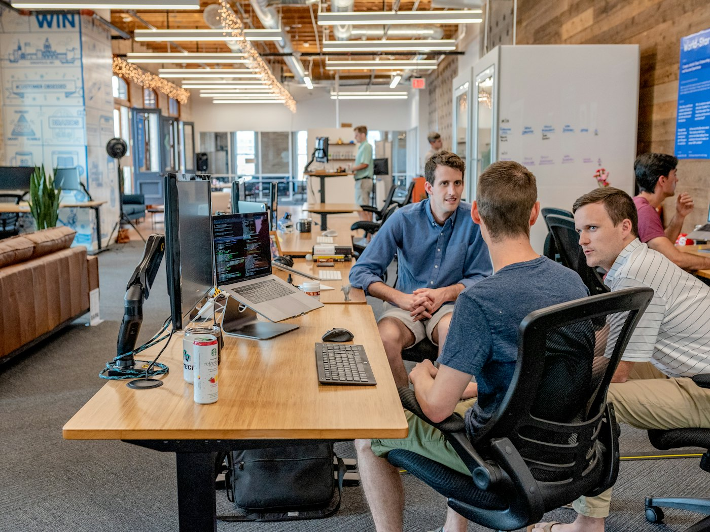
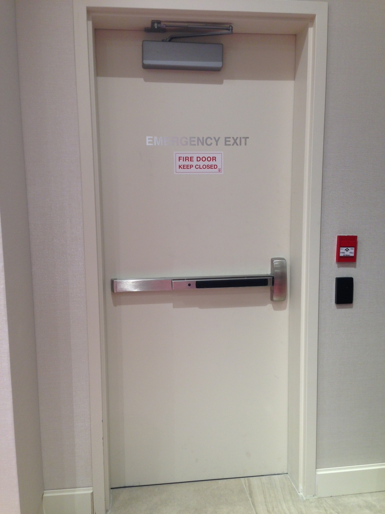
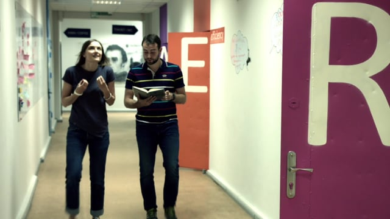

Вхід запиту
Фіксуємо ціль, стан проєкту, терміни, обмеження і перший пріоритет.
ARAKERA GROUP
Готуємо відеопрезентацію проєкту...
не просто сайт, а вхід у систему
ARAKERA структурує запит, визначає потрібні ролі, збирає контекст і допомагає рухати проєкт без хаосу між власником, виконавцями, партнерами та інвесторами.
система координації
Кожен крок має своє питання: що потрібно, хто відповідає, які ресурси залучаються і що вважається наступним результатом.
Фіксуємо ціль, стан проєкту, терміни, обмеження і перший пріоритет.
Розкладаємо проєкт на ресурси, ролі, ризики, документи і точки рішення.
Знаходимо потрібних виконавців, партнерів або спеціалістів під конкретну задачу.
Тримаємо фокус на наступному кроці: домовленості, контроль, зв'язок, результат.
чотири ресурси ARAKERA

Вхід, оцінка, структура, пріоритети та дорожня карта.
Власники, спеціалісти, команди, менеджери та локальні контакти.

Будівництво, реконструкція, технічні системи, логістика та контроль.
Партнерства, стратегічний розвиток і підготовка до масштабування.
проєкт має рухатися
Ми збираємо контекст, узгоджуємо ролі і перетворюємо складний запит на послідовність рішень. Це зменшує хаос, прискорює комунікацію і робить наступний крок очевидним.
приклади напрямків
Demo cases. Реальні кейси і цифри додаються після підтвердження клієнтом.


чому обирають ARAKERA
Цінність ARAKERA у тому, що складний проєкт не зависає між людьми. Його переводять у ясну структуру, де видно наступні дії.
Кожна задача має контекст, відповідального і наступний крок.
Ресурси підбираються під запит, а не “хто перший відповів”.
Ризики, терміни і відкриті питання фіксуються до старту руху.
Координація веде до дії, а не до нескінченних презентацій.
партнерський контур
Це важлива різниця. ARAKERA не створює випадкові знайомства, а готує контекст: що потрібно від партнера, які питання відкриті, який наступний крок і як виміряти прогрес.
Власники і ініціатори проєктів
Технічні та операційні фахівці
Підрядники, інтегратори, локальні команди
Стратегічні партнери і капітал
географія діяльності
Карта показує demo-напрямки роботи: Чехія, Словаччина, Австрія, Німеччина і Польща. Після підтвердження бізнес-моделі географію можна деталізувати під реальні офіси, партнерів або проєкти.
можна підключити після demo
Цей блок показує можливості для клієнта під час демонстрації. У production він замінюється на узгоджений текст, тарифи та реальні умови сервісу.
 01 · заявки
01 · заявки
Клієнт отримує заявку на пошту, а копія може зберігатися в Firestore: ім'я, контакт, тип запиту, джерело кнопки і статус обробки.
Для малого обсягу можна почати з no-cost квот Firebase. Платні витрати з'являються при рості трафіку, Cloud Functions, файлах або складнішій логіці.

03 · управлінняМожна додати приватний перегляд заявок, статуси “новий / в роботі / закритий”, експорт у Google Sheets і повідомлення відповідальній людині.
орієнтир по бюджету
Для початку достатньо: email-заявки, база заявок, простий admin-view і бюджетні попередження. Щомісячно для невеликого сайту часто може бути 0 Kč або дуже мало, якщо залишатися в no-cost квотах. Реальний максимум не фіксується: він залежить від трафіку, файлів, кількості заявок і включених сервісів.
залишити запит
Форма працює в demo-режимі. Для реального запуску підключається email-доставка, Web3Forms/Formspree або Firebase endpoint з копією заявки в базі.